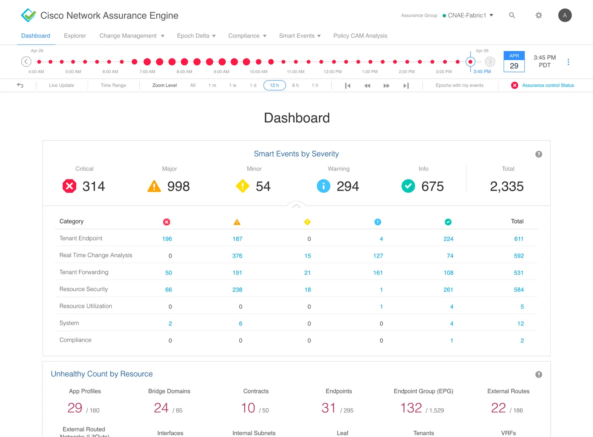
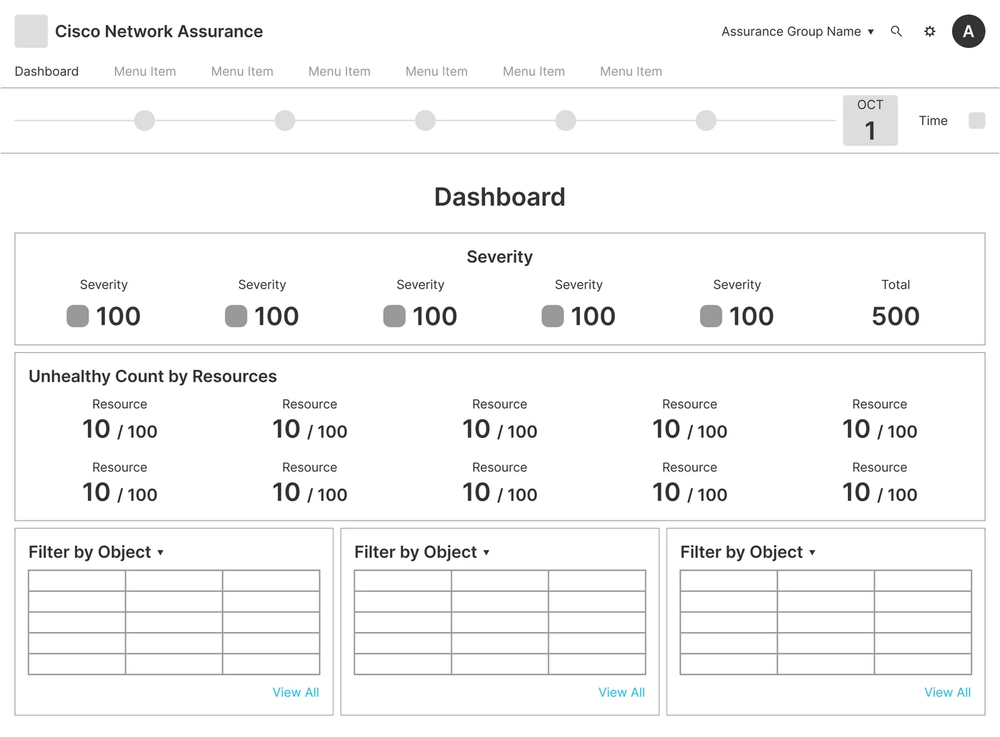
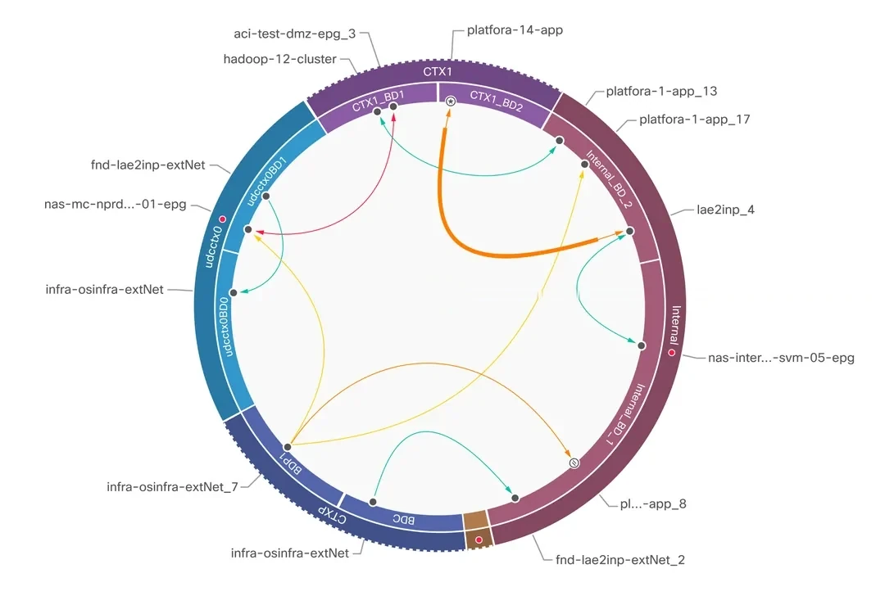
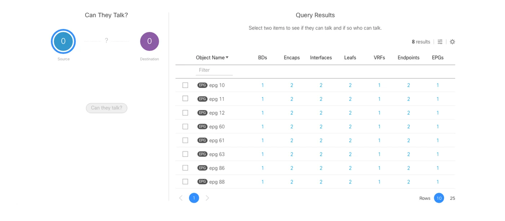
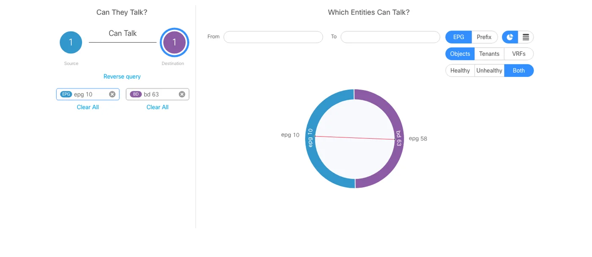
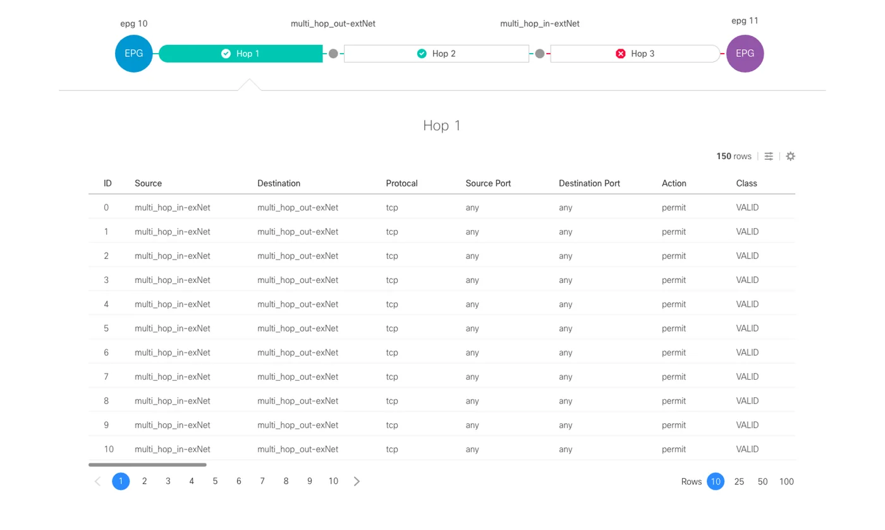
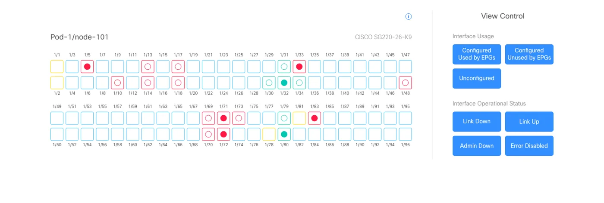

The Challenge
Too much data, not enough signal.
As the founding product designer, my job was to turn a loose set of engineering-led verification features into one enterprise application.
The core challenge was data density. The backend generated massive streams of algorithmic network data, so the interface was always at risk of drowning in noise. I defined the product architecture from scratch, then designed the filtering workflows and layouts that let operators cut through that noise and reach a specific network error quickly. We started with two designers and grew to four.
Features, Not Yet a Product
Engineering had built a set of verification features one at a time. They worked on their own, but they weren’t one product yet.
Data That Buried the Errors
The backend streamed so much algorithmic network data that the errors that mattered got lost.
One Error, Somewhere in the Fabric
Operators needed to reach one specific error quickly, without wading through everything around it.
The Solution
Make time the way in.
The team landed on time as the way in, and I designed how the timeline works and looks. The dashboard turns complex network validation logic into a view of the network’s state over time.
At its core is a patented navigation model based on time epochs. Operators move between past and real-time network states and isolate exactly when an error occurred.
Custom visualization components sit on top of the timeline. Administrators slice complex data, narrow down problems and see a clear path to the fix.
Time as the Way In
A patented navigation model based on time epochs lets operators move between past and real-time network states.
The Exact Moment
Operators isolate when an error occurred instead of searching through everything that happened.
A Clear Path to the Fix
Custom visualization components slice complex data, narrow down problems and point to remediation.
Discovery
Learn the network before drawing it.
We started with workshops alongside Cisco IT, technical marketing and product management to map what operators needed and what the system could and couldn’t do.
Going deep on Cisco ACI and its network objects showed me how operators actually work. Instead of just listing requests, I could see where isolated network layers failed to connect, and which ways of showing the data would work best.
Ideation
Settle the structure before the pixels.
I turned what we learned in discovery into a structure and navigation model that could grow. Wireframes showed exactly how operators would move between assurance views without losing their place.
With them, the team cross-checked feature priorities for the first release and settled the site map before high-fidelity design began.
Wireframe to Final
The dashboard, from structure to final design. Drag the handle to compare.


Key Screens
Four ways into the same dense data.
Time-Epoch Navigation
The patented timeline is the main way to move through the application. I designed how it works and looks: it tracks network state and health over time and flags each issue at the moment it happens.
The timeline is tied directly to the backend logic, so operators can step through past states and compare health across intervals. They go straight to the moment a configuration diverged instead of searching for it.
Hover a detail to find it on the screen
Visualizing Network Dynamics
This view turns dense configuration tables into an interactive map of network objects and the paths they communicate over. I set the hierarchy so communication violations and security policy discrepancies show up before routine data.
At a glance, operators can judge threat severity, manage compliance and check which rules are active.
Hover a detail to play that step

- Subjectsubj-udp-syslog
- Filterfilt-dst-syslog-filter
- dst-udp-syslogudp, dport 514
- dst-tcp-syslogtcp, dport 514
- Subjectsubj-syslog-API
- Filterfilt-udp-rpc
- dst-udp-889udp, dport 889
- Filterfilt-dst-tcp-filter
- dst-tcp-8089tcp, dport 8089
- dst-tcp-9997tcp, dport 9997
Natural Language Queries
Operators can ask about their network in plain language. I designed the search to start from four intents: What, Can, How and View.
Each predictive selection becomes a precise visualization, so operators find asset dependencies without writing custom syntax.
Discover assets and their object associations.




Advanced Filtering Controls
Dense network fabrics overwhelm operators fast. I designed one multi-layered filtering pattern: operators narrow huge datasets by technical parameters, find the exact point of failure and troubleshoot only that.
Because it is one pattern, filters behave the same on every main dashboard.
Select a leaf above to see associated policies
Associated Policies for rtp1-ae07-fab1-sw1011
High-Fidelity Delivery
From validated flows to a shipped product.
The last phase turned validated flows into production-ready specs. I set up a visual system for component behavior, high-density data palettes and interactive states, so every screen stays consistent.
I worked with engineering through implementation and gave the team a clear development roadmap.
Component Library
Specs built for dense data.
Dense data needed its own parts. I defined a library of specialized UI components and interaction patterns, including a semantic color system for network status alerts and reusable high-density tables and layout grids.
The specs gave engineering a predictable framework, kept the app visually consistent and sped up implementation.
- Critical
- Major
- Minor
- Warning
- Info

Marketing and Partner Video Production
For our partner presentations at CiscoLive!, I led production of the video use cases end to end: concept, illustration and animation. With product managers and the other designers, I tied each story to our product goals so the motion graphics made the technical value clear.
What Changed
One Application
Scattered verification features became one enterprise application.
Time as Navigation
A patented epoch timeline lets operators find the moment an error occurred.
Problems First
Violations and policy discrepancies rank above routine data in the relationship view.
Questions, Not Syntax
Natural language queries replace custom programmatic syntax.
One Filtering Pattern
Filters work the same way on every main dashboard.
Built to Ship
Production specs and a component library carried the product to a stable release.
Start with when. The why follows.
From Scattered Features to Three Patents
The product went from a loose set of engineering features to a stable production release, and I stayed on it through many releases. Tight timelines meant constant tradeoffs between system-level requirements and practical engineering limits.
The timeline and troubleshooting interfaces led to three US patents, and I’m one of the named inventors on all three. Operators got a clear way into very technical data.
Epoch Data Interface
US Patent 10,616,072, issued April 7, 2020
Techniques and Interfaces for Troubleshooting Datacenter Networks
US Patent 10,904,070, issued January 26, 2021
US Patent 11,805,004, issued October 31, 2023
Let’s build something great together.
Have an exciting role, a tricky product challenge, or just want to talk design? I’d love to hear from you.
Thanks, your message is on its way.
I’ll get back to you soon.